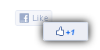

 Like+1
A browser extension that reduces your risk of getting carpal
tunnel syndrome up to 50% by turning Like into Like+1 buttons
tunnel syndrome up to 50% by turning Like into Like+1 buttons
Like+1 isn’t affiliated with Facebook or Google
© 2011 Ashkan Soltani and Brian Kennish Get the
code
Work for
WebMynd
Get the
code
Work for
WebMynd